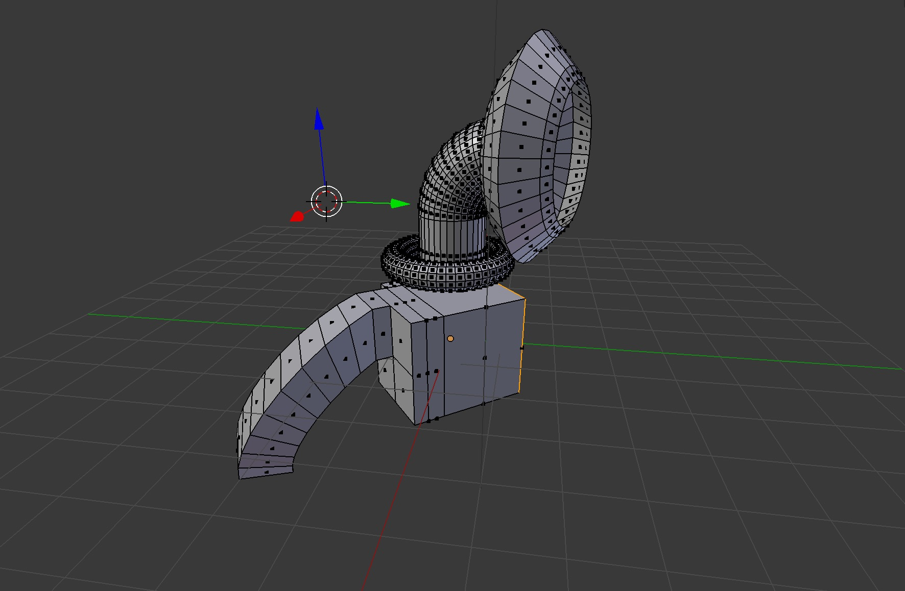
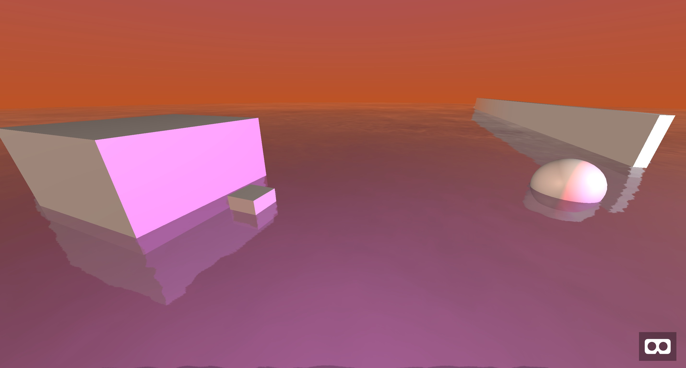

Una here—also brand new to VR and just diving into A-Frame. The reason we decided to start this project was just for an excuse to play with WebVR after all :) And I really love what Mike did with the place, but it’s time to start putting some objects into our 3D world.
To do so, I saw that A-frame accepts COLLADA models, and wondered what that was—so some digging was done. COLLADA is an open source 3D image format denoted with .dae. You can even open and move these types of files around on a Mac.
So I guess it’s time to learn a little bit of 3D modeling.
The best free software out there right now is called Blender. This program is extremely powerful, and some blogs noted that you’ll probably only need about 20% of its features to do 80% of your work (The classic 20/80 rule). I’ve never used Blender before (or any other 3d rendering software to be perfectly honest), but I thought I’d give it a spin.
I watched SO MANY Youtube videos by incredible 3D artists and started to play around. The biggest hangup I found initially was actually selecting things at first, and then I got so far as to beginning to understand the basics of modeling in create mode.

Blender (in my opinion) has a relatively high learning curve because a lot of the program relies on key bindings and shortcuts as a part of workflow.
I found a good cheat sheet online, and found these to be the most useful as I was begining to dive in:
Tab : Toggle Edit modeX : DeleteS: Scale / E: ExtrudeG: Grab/MoveShift+A : Add MenuK: Knife ToolThere were so many things! Understanding edit mode alone is where my head was wrapped up this weekend. I also started looking into materials and lighting but quickly that seemed to be getting too complex for a little ping (also I was getting quickly confused by the Blender GUI), so I decided to stop keeping this from @Mike and send forward an abstract ray-gun / secret-lab / tower thing I made while experimenting. I like it :)
Instead of lighting through Blender, A-frame has its own lighting model, and I started playing around with it. You can set the type, color, and intensity as well as individual properties based on the type you set. (Types include ambient, directional, hemisphere, point, and spot). You can apply these on entities or on objects. I went with a bright, intense crimson light on my collada model, which gave this mysterious feel that still matched the colors of the scene.
The coolest part of adding light was that since this is a 3D world now, that light reflected onto the other objects instantly. They now had a splash of color:

So while my contribution this week was just this line of code:
<a-collada-model
src="#alien-object"
light="type: point; intensity: 2.6; color: crimson;"
position="-4 0 -14"
depth="12" width="6"
height="7"
rotation="0 100 20">
</a-collada-model>
—there was a lot of Blender experimentation that got us there.
Ping, your turn @Mike!